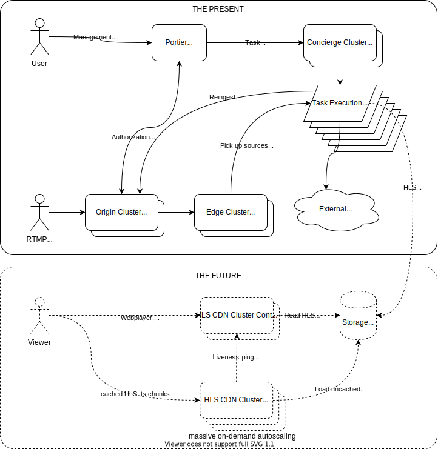

Cluster Architecture¶
Architecture Graph¶
Look at my graph, my graph is amazing...

The Present¶
Portier¶
Portier is a Django application that holds all configurations for streams and tasks.
It provides users with either a Webinterface or an API to configure streams and tasks that process streams.
When Portier is being notified by SRS about a stream, it will construct task descriptions out of the configurations that are processing this stream.
Concierge¶
Concierge is a tiny Python daemon, that negotiates with Portier about executing a task. It will then control a local supervisord daemon, which controls the actual process for this task.
Task executions are mostly ffmpeg process calls, that will pull RTMP streams from the SRS edges, process them, and then either push them back to the SRS origin or any other RTMP receiver.
If we want to add new task functionality to the cluster, we need to
- build a Django model describing all relevant aspects for the task type
- teach Portier how to compile the new task description
- build a Portier API & WebUI for easy configuration of the task type
- teach Concierge how to execute ths new task type
SRS¶
The SRS cluster is the central component that receives RTMP streams and plays out RTMP streams to clients. This is a redundant cluster, where senders can send the same stream to multiple origin nodes. When a client requests a stream from the edge nodes, they will search for the stream on the origin nodes.
If a RTMP connection to one off the origin nodes fails, all edge nodes that were using that origin will try to failover to another origin node receiving the stream. This happens within a few seconds, while keeping the client RTMP session alive.
When a sender tries to publish a RTMP stream to the cluster, the cluster will first ask Portier if this stream is authorized before accepting the stream.
The future¶
We have an immediate need for playing out streams directly to users, instead of just "transporting" the stream to another more popular streaming platform.
For this, work on a custom HLS CDN has started. What's needed:
- A task type that transcodes to a multi-variant HLS stream.
- Find a suitable storage system that is robust enough to act as the origin serving the HLS .ts chunks & playlists to the CDN edges
- Build a intermediary that can on-the-fly rewrite HLS playlists to redirect users to different CDN edges for load-balancing of .ts chunk delivery.
- Write code & configuration that autoscales a farm of nginx caching proxies, acting as the CDN edges
- Write code that keeps track of CDN edges, their liveness and their load.